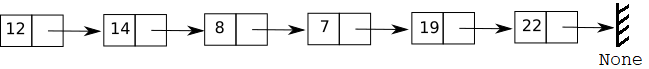

TP 12 - Liste Chainée Enoncé-Corrigé
| Thème 1 : Structure de Données |
|---|
| 12 | Implémentation d'une *liste* par une liste chaînée |
|---|
On propose dans cette activité d'implémenter le type abstrait liste par ce qu'on appelle une liste chaînée. Nous utiliserons le paradigme objet.
Interface
On rappelle que ce type abstrait est définie par les opérations
- création d'une liste vide
- ajout d'un élément en tête de liste
- accès à la tête de la liste
- accès à la queue de la liste
- test d'une liste vide
On rappelle aussi qu'une liste chaînée est une représentation non contigue des listes, avec des cellules (ou maillons) comportant chacun un élément (de la liste) et une référence au suivant. Ainsi, les éléments sont chaînés entre eux (d'où le nom) et on peut représenter une liste chaînée de la façon suivante :

Chaque cellule contient deux informations :
- la valeur d'un élément de la liste
- un lien vers la cellule suivante (son adresse mémoire)
Dans l'exemple proposé, le premier élément est 12, le second est 14, ..., le dernier est 22 car le lien vers la cellule suivante pointe vers None qui marque la fin de la liste.
➡ La classe Cellule⚓︎
Commençons par créer une cellule en utilisant la programmation objet. On doit donc créer une classe Cellule possédant deux attributs :
- valeur qui est la valeur de la cellule
- suivante qui est une référence vers la cellule suivante.
class Cellule:
def __init__(self, valeur, suivante):
self.valeur = valeur
self.suivante = suivante
On peut alors créer une chaîne et accéder à ses éléments en consultant la valeur d'une cellule, ou la valeur de la suivante, etc.
chaine1 = Cellule(1, Cellule(2, Cellule(3, None)))
print("premier élément :", chaine1.valeur)
print("deuxième élément :", chaine1.suivante.valeur)
print("troisième élément :", chaine1.suivante.suivante.valeur)
print("quatrième élément ? :", chaine1.suivante.suivante.suivante)
On peut visualiser la construction de la chaîne avec Python tutor. Il est important de remarquer que :
- chaque élément de la chaîne est une instance (un objet) de la classe
Cellule; - la variable
chainepointe vers la première cellule de la chaîne.
Question 1
Construisez une liste appelée chaine correspondant au schéma donné dans l'introduction.
# à compléter
chaine = Cellule(12, Cellule(14, Cellule(8, Cellule(7,Cellule(19,Cellule(22,None))))))
print("premier élément :", chaine.valeur)
print("deuxième élément :", chaine.suivante.valeur)
print("troisième élément :", chaine.suivante.suivante.valeur)
print("quatrième élément :", chaine.suivante.suivante.suivante.valeur)
Remarque : Pour le moment on a utilisé le terme chaine et non le terme liste car la classe
Cellulene permet pas de représenter une liste vide, qui serait une liste sans aucune cellule... On peut voir une chaine comme une liste non vide, c'est-à-dire comportant au moins une cellule.
➡ Eciture de quelques fonctions⚓︎
Longueur d'une chaine⚓︎
Pour déterminer la longueur d'une chaine, il suffit de parcourir chaque cellule, jusqu'à trouver une cellule dont l'attribut suivante pointe vers None. Si la chaine vaut None au départ, elle représente une liste vide qui a pour longueur 0.
On peut définir la fonction longueur qui calcule la longueur d'une chaine :
def longueur(chaine):
n = 0
courante = chaine # la cellule courante pointe vers chaine qui pointe vers la première cellule ou None
while courante is not None: # tant que la cellule courante ne pointe par vers None
courante = courante.suivante # on passe à la cellule suivante
n = n + 1 # la longueur augmente d'une unité
return n
chaine1 = Cellule(1, Cellule(2, Cellule(3, None)))
assert longueur(chaine1)==3
assert longueur(None)==0
Question 2
Vérifiez la longueur renvoyée pour la chaîne chaine (question 1).
# à compléter
print("longueur :", longueur(chaine))
Question 3
Proposez une version récursive de la fonction longueur (puis vérifiez)
# VERSION RECURSIVE
# VERSION RECURSIVE
# à compléter
def longueur(chaine) :
courante=chaine
if courante == None :
return 0
else :
return 1 + longueur(courante.suivante)
print("longueur :", longueur(chaine))
Eléments d'une chaine⚓︎
Il peut être intéressant de pouvoir afficher ou renvoyer tous les éléments d'une chaine. Cela permet notamment de vérifier des choses.
Question 4
Ecrivez une fonction affiche(chaine) qui affiche tous les éléments d'une chaine (non vide).
# à compléter
def affiche(chaine):
courante=chaine
while courante is not None:
print(courante.valeur)
courante=courante.suivante
def affiche(chaine):
if chaine.suivante == None :
return f"{chaine.valeur} -> None"
else :
return f"{chaine.valeur} -> {affiche(chaine.suivante)}"
affiche(chaine)
affiche2(chaine)
Question 5
Ecrivez une fonction liste_elements(chaine) qui renvoie la liste (au sens list de Python) des éléments d'une chaîne.
def liste_elements(chaine):
"""Renvoie une list Python contenant tous les éléments de la liste chaînée L
>>> liste_elements(Cellule(1, Cellule(2, Cellule(3, None))))
[1, 2, 3]
>>> liste_elements(Cellule(12, Cellule(14, Cellule(8, Cellule(7, Cellule(19, Cellule(22, None)))))))
[12, 14, 8, 7, 19, 22]
"""
# à compléter
T=liste_elements(Cellule(12, Cellule(14, Cellule(8, Cellule(7, Cellule(19, Cellule(22, None)))))))
print(T)
def liste_elements(chaine):
"""Renvoie une list Python contenant tous les éléments de la liste chaînée L
>>> liste_elements(Cellule(1, Cellule(2, Cellule(3, None))))
[1, 2, 3]
>>> liste_elements(Cellule(12, Cellule(14, Cellule(8, Cellule(7, Cellule(19, Cellule(22, None)))))))
[12, 14, 8, 7, 19, 22]
"""
L=[]
courante = chaine
while courante is not None:
L.append(courante.valeur)
courante = courante.suivante
return L
# à compléter
T=liste_elements(Cellule(12, Cellule(14, Cellule(8, Cellule(7, Cellule(19, Cellule(22, None)))))))
print(T)
#Pour vérification
import doctest
doctest.testmod() # verbose = True pour plus de détails
Accès au i-ème élément d'une chaine⚓︎
On souhaite maintenant écrire une fonction ieme_element(chaine, i) permettant de renvoyer le i-ème élément de la chaine. Préconditions : chaine est non vide (au moins une cellule) et i est compris entre 0 et longueur(chaine)-1.
Question 6
Proposez une fonction qui convient. On peut trouver le i-ème élément avec une boucle ou par récursivité. Voir si besoin les anciens chapitres.
# à compléter
def ieme_element(chaine, i):
pass
# VERSION ITERATIVE AVEC UNE BOUCLE WHILE
def ieme_element(chaine, i):
assert chaine!=None and 0 <i < longueur(chaine)-1
ni = 0
courante = chaine
while courante != None and ni != i :
ni += 1
courante = courante.suivante
if courante != None :
return courante.valeur
# VERSION RECURSIVE
def niemeElement(chaine, i) :
assert chaine!=None
if i == 0 :
return chaine.valeur
else :
return niemeElement(chaine.suivante, i-1)
ieme_element(chaine,2)
➡ La classe ListeChainee⚓︎
La classe Cellule ne permet pas d'implémenter à elle seule le type abstrait liste car rien n'est prévu pour représenter une liste vide. On va utiliser cette classe pour créer une classe ListeChainee qui implémente ce type abstrait. Il suffira de faire pointer la liste vers le premier élément de la chaîne (de cellules) ou vers None pour la liste vide.
Les opérations à implémenter dans la classe ListeChainee sont :
- création d'une liste vide
- ajout d'un élément en tête de liste :
ajouter_en_tete(self, element) - test d'une liste vide :
est_vide(self) - accès à la tête de la liste :
premier(self) - accès à la queue de la liste :
reste(self)
Attributs⚓︎
On choisit de définir un seul attribut tete, qui peut être soit une référence vers la première Cellule d'une chaîne (de cellules), soit la valeur particulière None pour représenter une liste vide. On définit ainsi une liste chaînée.
Méthodes⚓︎
On veut implémenter les 5 opérations primitives d'une liste (données en début de document).
Implémentation⚓︎
- La méthode d'initialisation
__init__crée une liste vide en initialisant l'attributteteàNone. - La méthode
ajouter_en_tetepermet d'ajouter un élement en première position. - La méthode
est_videpermet de tester si une liste est vide ou non - La méthode
premierpermet d'accéder au premier élément d'une liste non vide (sa tête). On peut aussi l'attributtete. - La méthode
restepermet d'accéder au reste des éléments d'une liste non vide (sa queue), qui est aussi une liste.
Question
Etudiez attentivement l'implémentation proposée.
class ListeChainee:
"""Manipulation de listes chaînées"""
def __init__(self):
"""Initialise une liste vide."""
self.tete = None
def ajouter_en_tete(self, e):
"""Insère e en tête de liste en créant une nouvelle cellule"""
nouvelle_cellule = Cellule(e, self.tete)
self.tete = nouvelle_cellule
def est_vide(self):
"""Renvoie True si la liste est vide, False sinon"""
return self.tete is None
def premier(self):
"""Renvoie le premier élément de la liste (sa tête) si cette dernière est non vide"""
assert self.premier is not None, "une liste vide n'a pas de tête"
return self.tete.valeur
def reste(self):
"""Renvoie le reste de la liste (sa queue) si cette dernière est non vide."""
assert self.tete is not None, "une liste vide n'a pas de queue"
r = ListeChainee()
r.tete = self.tete.suivante
return r
Explications : On s'attarde sur les méthodes ajouter_en_tete et reste qui sont plus subtiles qu'il n'y paraît.
- Méthode
ajouter_en_tete:- ligne 1 : on commence par créer une nouvelle cellule dont l'attribut
valeurvaut l'élémenteà ajouter à la liste et dont l'attributsuivantevautself.tetec'est-à-dire la référence vers la première cellule de la liste. On construit ainsi une cellule avec la valeur à ajouté et qui pointe vers l'ancienne première cellule de notre liste. - ligne 2: il ne faut pas oublier de mettre à jour l'attribut
tetepour qu'il désigne notre nouvelle première cellule.
- ligne 1 : on commence par créer une nouvelle cellule dont l'attribut
- Méthode
reste:- ligne 1 : on programme de manière plus sûre en commençant pas tester au moyen d'
assertque la liste n'est pas vide. - ligne 2, 3 et 4 : il ne suffit pas de renvoyer la deuxième cellule de notre liste (
self.tete.suivante) car on renverrait alors un objetCelluleet non uneListeChaineecomme souhaité. On commence donc par créer une liste viderdont l'attributtetedésigne la deuxième cellule (celle qui suit la tête) et on renvoie cette listerqui pointe bien vers la deuxième cellule de départ.
- ligne 1 : on programme de manière plus sûre en commençant pas tester au moyen d'
On peut créer une liste vide, puis lui ajouter des éléments en tête. On accède aux différents éléments grâce aux méthodes premier et reste.
L = ListeChainee()
print(L.est_vide())
L.ajouter_en_tete(22)
print(L.est_vide())
L.ajouter_en_tete(19)
L.ajouter_en_tete(7)
L.ajouter_en_tete(8)
L.ajouter_en_tete(14)
L.ajouter_en_tete(12)
print("le premier élément est :", L.premier())
print("le deuxième élément est :", L.reste().premier()) # le 2ème est le premier du reste
print("le troisième élément est :", L.reste().reste().premier()) # le 3ème est le premier du reste du reste
Ajout de quelques méthodes⚓︎
On souhaite maintenant utiliser les fonctions longueur, liste_elements et ieme_element pour définir trois nouvelles méthodes à notre classe ListeChainee.
Pour ajouter une méthode taille à la classe, il suffit d'appeler notre fonction longueur écrite précédemment :
def taille(self):
return longueur(self.tete)
Il ne faut pas oublier que la fonction
longueurdéjà écrite s'applique à une chaîne désignée par sa première cellule et non à un objet de la classeListeChainee. Ainsi, il ne faut pas renvoyerlongueur(self)mais bienlongueur(self.tete), oùself.tetedésigne bien la première cellule de la liste chaînée.
Question 7
En utilisant les fonctions ieme_element et liste_elements et en vous inspirant de la méthode taille(self), écrivez les méthodes lire(self, i) et __repr__(self) qui permettent respectivement de renvoyer le i-ème élément d'un objet ListeChainee et de représenter un objet ListeChainee comme une list Python.
Warning
Attention : la méthode spéciale __repr__ doit renvoyer une chaîne de caractères, il faut penser à utiliser la fonction str pour convertir la list Python.
class ListeChainee:
"""Manipulation de listes chaînées"""
def __init__(self):
"""Initialise une liste vide."""
self.tete = None
def ajouter_en_tete(self, e):
"""Insère e en tête de liste en créant une nouvelle cellule"""
nouvelle_cellule = Cellule(e, self.tete)
self.tete = nouvelle_cellule
def est_vide(self):
"""Renvoie True si la liste est vide, False sinon"""
return self.tete is None
def premier(self):
"""Renvoie le premier élément de la liste (sa tête) si cette dernière est non vide"""
assert self.premier is not None, "une liste vide n'a pas de tête"
return self.tete.valeur
def reste(self):
"""Renvoie le reste de la liste (sa queue) si cette dernière est non vide."""
assert self.tete is not None, "une liste vide n'a pas de queue"
r = ListeChainee()
r.tete = self.tete.suivante
return r
def longueur(self):
return longueur(self.tete)
def taille(self):
return longueur(self.tete)
def lire(self, i):
return niemeElement(self.tete, i)
def __repr__(self):
return str(liste_elements(self.tete))
# ESSAIS
L1 = ListeChainee()
L1.ajouter_en_tete(25)
L1.ajouter_en_tete(29)
L1.ajouter_en_tete(27)
L1.ajouter_en_tete(18)
L1.ajouter_en_tete(4)
L1.ajouter_en_tete(32)
L1.ajouter_en_tete(6)
L1.ajouter_en_tete(16)
print(L1)
print(L.reste())
print("longueur :", L1.longueur())
print("premier élément :", L1.lire(0))
print("troisième élément :", L1.lire(2))
print("quatrième élément :", L1.lire(3))
Utilisation de méthodes spéciales⚓︎
On peut utiliser les méthodes spéciales __len__ et __getitem__ à la place des méthodes taille et lire afin d'utiliser la syntaxe habituelle de Python en écrivant :
- len(L) pour obtenir la longueur d'une liste L au lieu de L.taille()
- L[i] pour accéder au i-ème élément d'une liste L au lieu de L.lire(i).
Question 8
Remplacez les méthodes taille et lire par les méthodes __len__ et __getitem__. Vérifiez ensuite si tout fonctionne comme avec des list Python.
# à compléter
class ListeChainee:
"""Manipulation de listes chaînées"""
def __init__(self):
"""Initialise une liste vide."""
self.tete = None
def ajouter_en_tete(self, e):
"""Insère e en tête de liste en créant une nouvelle cellule"""
nouvelle_cellule = Cellule(e, self.tete)
self.tete = nouvelle_cellule
def est_vide(self):
"""Renvoie True si la liste est vide, False sinon"""
return self.tete is None
def premier(self):
"""Renvoie le premier élément de la liste (sa tête) si cette dernière est non vide"""
assert self.premier is not None, "une liste vide n'a pas de tête"
return self.tete.valeur
def reste(self):
"""Renvoie le reste de la liste (sa queue) si cette dernière est non vide."""
assert self.tete is not None, "une liste vide n'a pas de queue"
r = ListeChainee()
r.tete = self.tete.suivante
return r
def taille(self):
return longueur(self.tete)
def lire(self, i):
return niemeElement(self.tete, i)
# à compléter
class ListeChainee:
"""Manipulation de listes chaînées"""
def __init__(self):
"""Initialise une liste vide."""
self.tete = None
def ajouter_en_tete(self, e):
"""Insère e en tête de liste en créant une nouvelle cellule"""
nouvelle_cellule = Cellule(e, self.tete)
self.tete = nouvelle_cellule
def est_vide(self):
"""Renvoie True si la liste est vide, False sinon"""
return self.tete is None
def premier(self):
"""Renvoie le premier élément de la liste (sa tête) si cette dernière est non vide"""
assert self.premier is not None, "une liste vide n'a pas de tête"
return self.tete.valeur
def reste(self):
"""Renvoie le reste de la liste (sa queue) si cette dernière est non vide."""
assert self.tete is not None, "une liste vide n'a pas de queue"
r = ListeChainee()
r.tete = self.tete.suivante
return r
def longueur(self):
return longueur(self.tete)
def taille(self):
return longueur(self.tete)
def lire(self, i):
return niemeElement(self.tete, i)
def __repr__(self):
return str(liste_elements(self.tete))
def __len__(self):
return self.taille()
def __getitem__(self,i):
return self.lire(i)
# ESSAIS
L1 = ListeChainee()
L1.ajouter_en_tete(25)
L1.ajouter_en_tete(29)
L1.ajouter_en_tete(27)
L1.ajouter_en_tete(18)
L1.ajouter_en_tete(4)
L1.ajouter_en_tete(32)
L1.ajouter_en_tete(6)
L1.ajouter_en_tete(16)
print(L1)
print("taille :", L1.taille())
print(len(L1))
print(L1[2])
Supprimer en tête et ajouter en queue⚓︎
Nous terminons par l'écriture de deux méthodes qui peuvent se révéler utiles (pour la suite de l'année). Il s'agit des méthodes :
supprimer_en_tete(self)qui permet de supprimer l'élément de tête d'une listeajouter_en_queue(self, e)qui permet d'ajouter l'élémenteen queue de liste
Question 9
Expliquez, par des phrases et/ou un schéma, ce qu'il faut faire pour supprimer l'élément de tête (la cellule de tête) d'une liste L.
On doit faire pointer la tête de liste vers la deuxième cellule dont la référence se trouve dans l'attribut suivante de la première cellule c'est-à-dire L.premier.suivante.
Question 10
Expliquez, par des phrases et/ou un schéma, ce qu'il faut faire pour ajouter l'élément e en queue d'une liste L.
Il faut parcourir toutes les cellules jusqu'à la dernière, celle qui pointe vers None. On crée une nouvelle cellule . Il suffit de faire pointer cette dernière cellule (en modifiant son attribut suivante vers une nouvelle cellule que l'on crée avec l'attribut valeur égal à e et l'attribut suivante qui pointe vers None.
Question 11
Ajoutez ces deux méthodes dans la classe Liste (l'ajout en queue est beaucoup plus difficile).
#Code complet
class Cellule:
def __init__(self, valeur, suivante):
self.valeur = valeur
self.suivante = suivante
def longueur(chaine):
n = 0
courante = chaine # la cellule courante pointe vers chaine qui pointe vers la première cellule ou None
while courante is not None: # tant que la cellule courante ne pointe par vers None
courante = courante.suivante # on passe à la cellule suivante
n = n + 1 # la longueur augmente d'une unité
return n
def affiche(chaine):
if chaine.suivante == None :
return f"{chaine.valeur} -> None"
else :
return f"{chaine.valeur} -> {affiche(chaine.suivante)}"
def liste_elements(chaine):
"""Renvoie une list Python contenant tous les éléments de la liste chaînée L
>>> liste_elements(Cellule(1, Cellule(2, Cellule(3, None))))
[1, 2, 3]
>>> liste_elements(Cellule(12, Cellule(14, Cellule(8, Cellule(7, Cellule(19, Cellule(22, None)))))))
[12, 14, 8, 7, 19, 22]
"""
L=[]
courante = chaine
while courante is not None:
L.append(courante.valeur)
courante = courante.suivante
return L
def niemeElement(chaine, i) :
assert chaine!=None
if i == 0 :
return chaine.valeur
else :
return niemeElement(chaine.suivante, i-1)
class ListeChainee:
"""Manipulation de listes chaînées"""
# ---------- OPERATIONS PRIMITIVES ------------------
def __init__(self):
"""Initialise une liste vide."""
self.tete = None
def ajouter_en_tete(self, e):
"""Insère e en tête de liste en créant une nouvelle cellule"""
nouvelle_cellule = Cellule(e, self.tete)
self.tete = nouvelle_cellule
def est_vide(self):
"""Renvoie True si la liste est vide, False sinon"""
return self.tete is None
def premier(self):
"""Renvoie le premier élément de la liste (sa tête) si cette dernière est non vide"""
assert self.premier is not None, "une liste vide n'a pas de tête"
return self.tete.valeur
def reste(self):
"""Renvoie le reste de la liste (sa queue) si cette dernière est non vide."""
assert self.tete is not None, "une liste vide n'a pas de queue"
r = ListeChainee()
r.tete = self.tete.suivante
return r
# ---------- AUTRES OPERATIONS ------------------
def longueur(self):
return longueur(self.tete)
def taille(self):
return longueur(self.tete)
def lire(self, i):
return niemeElement(self.tete, i)
#def __repr__(self):
# return str(liste_elements(self.tete))
# Une autre représentation possible
def __repr__(self):
ch = ""
courante = self.tete
for k in range(self.taille()):
ch = ch + " -> " + str(courante.valeur)
courante = courante.suivante
return ch[4:] # pour enlever les 4 caractères " -> " du début
def __len__(self):
return self.taille()
def __getitem__(self,i):
return self.lire(i)
def supprimer_en_tete(self):
"""Supprime l'élément en tête de liste, celle-ci étant non vide"""
assert self.tete is not None, "on ne peut pas supprimer d'élément d'une liste vide"
self.tete = self.tete.suivante
def ajouter_en_queue(self, e):
"""Ajoute l'élément e en queue de liste"""
courante = self.tete
if courante is None: # si la liste est vide
self.ajouter_en_tete(e) # on ajoute e en tête
else:
while courante.suivante is not None: # sinon on parcourt la liste jusqu'au dernier élément
courante = courante.suivante
derniere_cellule = Cellule(e, None)
courante.suivante = derniere_cellule
# ESSAIS
L = ListeChainee()
L.ajouter_en_tete(22)
L.ajouter_en_tete(19)
L.ajouter_en_tete(7)
L.ajouter_en_tete(8)
L.ajouter_en_tete(14)
L.ajouter_en_tete(12)
print(L)
L.supprimer_en_tete()
print(L)
L.ajouter_en_queue(5)
print(L)
#L.supprimer_en_tete()
#print(L)
12 -> 14 -> 8 -> 7 -> 19 -> 22
14 -> 8 -> 7 -> 19 -> 22
14 -> 8 -> 7 -> 19 -> 22 -> 5
➡ Création d'un module listechainee⚓︎
Créez un module listechainee.py qui peut être importé dans un autre programme Python et qui permet de manipuler la classe ListeChainee ainsi créée (avec toutes les méthodes). Attention à ne rien oublier, la classe ListeChainee fait appel à des fonctions et classe externes.
➡ Bilan⚓︎
BILAN
- On a implémenté une classe
ListeChaineequi implémente le type abstrait liste avec des listes chaînées qui sont des chaînes de plusieurs cellules de la classeCellule. Chaque cellule possède une valeur et une référence vers la cellule suivante. Les objets de la classeListeChaineepointent vers la première cellule d'une chaîne, ou versNonepour désigner une liste vide. - L'intérêt d'une liste chaînée, par rapport à une implémentation avec un tableau dynamique (
listPython), se trouve dans les opérations d'ajout et suppression en début de liste (ajout, suppression) qui sont moins coûteuses car ne nécessitent pas de décaler tous les éléments qui suivent. - La création du module
listechaineepermet de manipuler des listes (implémentées par des listes chaînées) en important la classeListeChaineedu module. Une fois importée, cette classe masque totalement l'implémentation avec des cellules formant des listes chaînées. Néanmoins, le savoir permet de privilégier certaines opérations moins coûteuses qu'avec une implémentation avec des tableaux redimensionnables (listPython).
➡ Pour aller plus loin⚓︎
On pourrait programmer pour notre classe ListeChainee, les autres opérations disponibles pour le type prédéfini list de Python. Par exemple :
- la suppression en queue
- l'ajout/la suppression en position i
- la concaténation
- l'inversion
- etc.
On se rapprocherait ainsi du type list de Python mais il faut garder en tête que le coût de certaines opérations n'est pas forcément le même : rapide en fin de liste mais coûteux en début pour les list Python, alors que c'est le contraire pour les listes chaînées de notre classe ListeChainee.